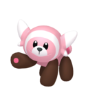
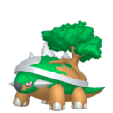
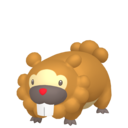
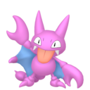
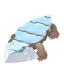
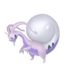

Progression Dex |
Kanto Research Tasks
Route 1
Viridian Forest
Mt. Moon
Aquatic Pokemon
Diglett's Cave
Psychic
Rock Tunnel
Pokémon Tower
Fighting Dojo
Power Plant
Seafoam Islands
Pokémon Mansion
Fossil Secrets
Victory Road
Cerulean Cave
Evolution Stones
Trading Mysteries
Flying
Legendary Bird Pokémon
Genetic Pokémon
Galar Research Tasks
First Partner Pokemon
Route 1
Slumbering Weald
Rolling Fields
Watchtower Ruins
Bridge Field

Dusty Bowl
Fishing in Galar
Galar Mine
Galar Mine No.2
Glimwood Tangle
Route 10
The four fossils
Working Pokemon
Troublesome Team Yell
Marnie's Pokémon
Bede's Pokémon
Leon's Pokémon
The Pokémon band
Legends of Galar
Sinnoh Research Tasks
First Partner Pokémon
Route 205
Eterna Forest
Pastoria Great Marsh
Mount Coronet
Lakefront
Fuego Ironworks
Iron Island
Route 217
The Grand Underground
Reliable Partners

Team Galactic's Pokemon
The Elite Four's Pokemon
Cynthia's Pokemon
Stark Mountain
Route 230
Route 224
Deep Within Sinnoh
Lakes of Sinnoh
Pokemon of Myth
Hisui Research Tasks
First Partner Pokémon
Entry Trial

Obsidian Fieldlands
Crimson Mirelands
Cobalt Coastlands
Coronet Highlands

Alabaster Icelands

Shrouded Ruins
Deadwood Haunt
Snowpoint Temple
Hisui's Swimming Pokemon
Hisui's Flying Pokemon
Dependable Partners
Ride Pokemon
The Miss Fortune Sisters
Space-Time Distortions
Lake Guardians

Incarnate Forces of Hisui
Origin Forme Pokemon
Almighty Sinnoh
Paldea Research Tasks
First Partner Pokemon
Poco Path
Mesagoza
Unknown Pokemon
Paldea's Gyms
The Wild Bulls of Paldea
Team Star's Pokemon
Titan Pokemon
Seaside Pokemon
Treasured Partners
Victory Road
Coin Entity Pokemon
Armored Pokemon
The Pokemon of the Elite Four
Nemona's Pokemon
The Great Crater of Paldea
Professor Sada's Pokemon
Professor Turo's Pokemon
Ruinous Pokemon
Legendary Pokemon